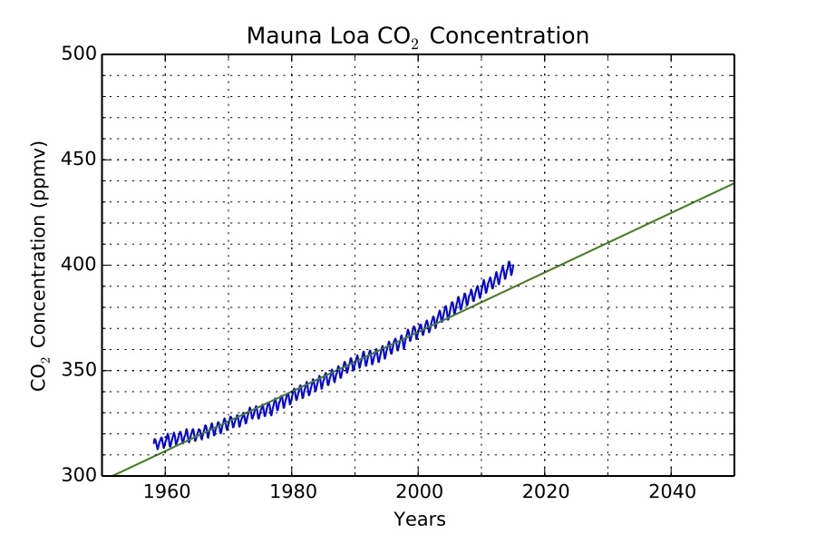
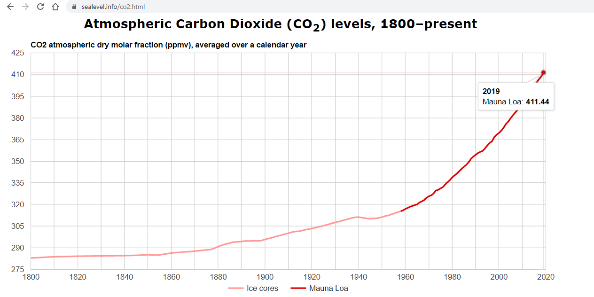
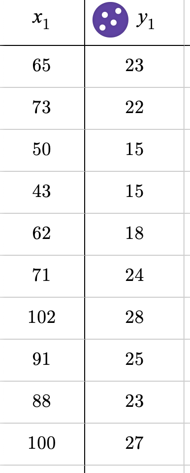

Linear Exercises
1. Ellenberg Chapter 1
Read the first chapter of How Not to Be Wrong. Focus on the difference between linear and non-linear relationships.
- Create a list of at least 10 pairs of quantities (environmental, social, economic, biological, etc.) that you believe may be associated or correlated.
- For each pair, clearly state:
- Which quantity you believe is the independent variable.
- Whether an increase in the independent variable would likely cause an increase or decrease in the other variable.
- Whether you believe the relationship is likely linear or non-linear (brief justification required).
- Your final submission should include exactly 10 clearly written examples.
2. Linear Relationships
Revisit your list from Exercise 1. You may revise your examples. Select at least 3 relationships that you believe could reasonably be modeled as linear.
For each of the 3 selected relationships, explicitly provide:
- The quantity on the x-axis (independent variable), including:
- Units (e.g., dollars, meters, years)
- Dimensions (e.g., length, time, mass, currency)
- The quantity on the y-axis (dependent variable), including:
- Units
- Dimensions
- The units and dimensions of the slope (show how you determined them).
- A clearly written quantitative question that this linear model would allow you to answer.
3. Linear Notes
Read the notes for this section carefully.
- Explain in complete sentences how to determine the units and dimensions of a slope.
- State whether the slope changes in a linear graph and justify your answer.
4. Unit Conversion Graph
Represent the conversion from miles to meters as a linear graph.
- Draw a clearly labeled graph with:
- x-axis labeled “Miles”
- y-axis labeled “Meters”
- Show values from 0 to 10 miles on the x-axis with labeled tick marks.
- Include corresponding meter values on the y-axis.
- Explicitly show how the slope of the line represents the unit conversion factor.
- Demonstrate (in writing) how to use your graph to estimate the number of meters in a given number of miles.
5. Taco Estimation
Model the taco estimation problem as a linear relationship.
- Draw a graph where:
- x-axis = number of students (0–20,000)
- y-axis = number of tacos
- Clearly label all axes and include units.
- State the units of the slope and explain what the slope represents in context.
- Write the linear formula and explain how it corresponds to your graph.
- Show how to use the graph to estimate the number of tacos for a specific number of students.
6. Pizza Formula
A Rafy’s large cheese pizza costs 16 dollars plus 2 dollars for each per topping.
- Write a clearly defined linear formula for total cost as a function of number of toppings. Define your variables.
- Sketch a graph showing price versus number of toppings (0–4).
- Label axes and include units.
7. Modern Keeling Curve
Examine the Keeling Curve.
- Describe what the slope represents physically and why it is important.
- Estimate the average slope (ppm per year) from 2010 to 2020. Show how you calculated your estimate.
- Assuming the 2010–2020 rate continues linearly, calculate the projected CO₂ concentration in 2050. Show your work.

8. Early 20th Century Keeling Curve
- Describe how the slope from 1700 to today changes over time.
- Estimate the average slope (ppm per year) from 1900 to 1950. Show your calculation.
- If the 1900–1950 rate had continued unchanged, calculate what today’s concentration would be. Show your work.
- Briefly compare this projection to actual modern values.

9. Taco Estimation Spreadsheet
- Create a spreadsheet with:
- One column labeled “Number of People”
- One column labeled “Number of Tacos”
- Use a formula (not manual typing) to calculate tacos. If you don't know how this is done check out this tutorial
- Create a graph using these two columns. Note: You must enter the number of people (the independent variable), your formula will automatically generate the number of tacos needed. Use a reasonable range of values for number of people.
- Upload a screenshot that clearly shows:
- Your formulas
- Your graph
10. Unit Conversion Scale
- Create a hand-drawn $x-y$ graph converting between pounds and kilograms. Put pounds on the $x$-axis.
- Mark tick marks at clear, round-number (no decimals) intervals. Use a ruler to ensure the actual distance between tick marks is consistent.
- Write the linear equation that relates pounds to kilograms.
- Calculate the exact page distance (in inches) between each of yout tick marks for each of your axes. The "page distance" means the distance on your paper between each of you tick marks. In other words, you are detemining the rate "pounds per tick mark distance (in inches)", and the the rate "kilograms per tick mark distance (in inches)".
- Let $P$ be "pounds per tick mark distance (in inches)" and $K$ be "kilograms per tick mark distance (in inches)". Find $\frac{P}{K}$ and include units. Explain the meaning of this ratio. Specifically does this ratio have to do with the relationship between the physical units of pounds and kilograms, is the ratio determined by the choices you made regarding tick mark spacing, or some combination of the two? Explain.
11. Absolute Temperature Scale
- Draw a linear conversion scale between Celsius and Fahrenheit from 20 to 30 degrees Celsius.
- Mark tick marks on both scales using a ruler. Decide on a measure in millimeters on your paper that will represent the distance between the tick marks on your Celsius scale. The measure of the tick marks must be as consistent as possible.
- State the conversion formula from degrees Celsius to degrees Fahrenheit.
- State the unit conversion factor that can be used to convert between Celsius and Fahrenheit (this is not the same thing as the formula from the previous question).
- State the conversion factor for the change one degree Celsius to the distance between your tick marks. Your answer should have the unit "degree Celsius per unit millimeter"
- Use you conversion factor from the previous problem to determine the distance between each degree Fahrenheit and the conversion factor between Celsius and Fahrenheit. Check your answer by looking at the measure between tick marks on your physical paper against one degree Fahrenheit.
12. Linear Relationship in the News
- Select a news article discussing a relationship between two variables.
- Include the article title and working link.
- Identify the two variables and state their units and dimensions.
- Sketch a graph (assume linear locally if needed) and label axes.
- Write ~150 words explaining what quantitative questions this relationship allows you to answer.
13. Using a DBH tape
- Write a linear equation that shows the relationship bewteen the circumference of a tree and the diameter measurement shown on the DBH tape (see Linear Scales reading). Represent the circumference as the independent variable, and the DBH reasurement as the dependent measurement.
- What is the slope in your equation? Use appropriate units.
- 10 diseased trees were measured using the DBH tape. Their measurements in inches were as follows: 23,22,15,15,18,24,28,25,23,27. After they were cut down their circumferences were carefully measured. The circumferences were 65,73,50,43,62,71,102,91,88,100 . This is shown in the table below. $x_1$ represents circumferences, and $y_1$ represents DBH measurements.
- Use spreadsheet tools (e.g. Desmos) to plot the data. On the same plot, graph the linear equation you stated in the first part of this question.
- Do the data points all fall on the line? Are they 'close' to the line?
- Explain why we would not expect the dots to all fall exactly on the line.
